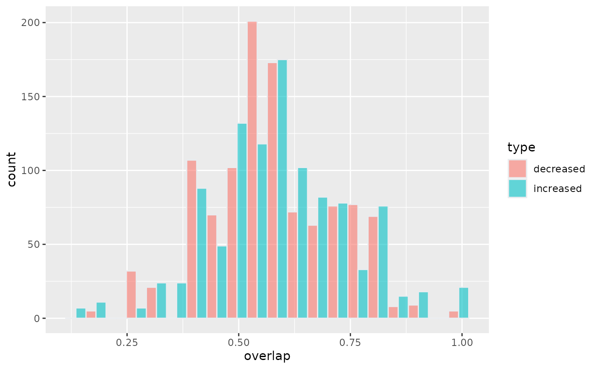
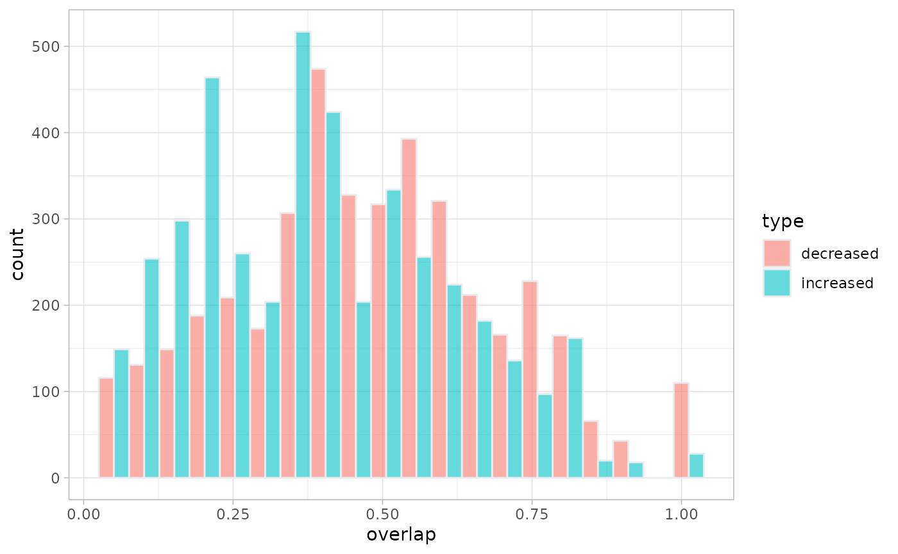

healthysig.RmdCompare genus abundance change (increased/decreased) from all diseased subjects in BugsigDB with existing typical genus from healthy volunteers recorded in BugsigDB Study 562 typical genus were set at prevalence level=0, 50, and 70 Using feces sample as an example
##
## Attaching package: 'dplyr'## The following objects are masked from 'package:stats':
##
## filter, lag## The following objects are masked from 'package:base':
##
## intersect, setdiff, setequal, union## Loading required package: ggplot2
full.dat <- bugsigdbr::importBugSigDB(version = "devel", cache=FALSE)
#Stripping empty signatures:
ind1 <- lengths(full.dat[["MetaPhlAn taxon names"]]) > 0
ind2 <- lengths(full.dat[["NCBI Taxonomy IDs"]]) > 0
dat <- full.dat[ind1 & ind2,]
#prevalence threshold=50%
bugs50<- (dat) %>%
filter (Study=='Study 562') %>%
filter (Experiment=="Experiment 3" & `Signature page name`=='Signature 1') %>%
filter (`Body site` == "feces") %>%
filter (grepl("genus",Description))
healthysig50 <- bugsigdbr::getSignatures(bugs50)
head(healthysig50)## $`bsdb:562/3/1_NA:feces-from-healthy-adult_vs_none---50%-prevalence-threshold_NA`
## [1] "216851" "816" "841" "572511" "2316020" "189330" "1730"
## [8] "909656" "1407607" "375288" "239759" "207244" "33042" "102106"
## [15] "2048137" "2569097" "1263" "1678" "28050" "1031" "204475"
## [22] "1905344" "459786" "1485" "283168" "946234" "447020" "838"
## [29] "397864" "644652" "33024" "2172004" "561" "35832" "239934"
## [36] "574697" "577310" "1505657"
#prevalence threshold=0
bugs0<- (dat) %>%
filter (Study=='Study 562') %>%
filter (Experiment=="Experiment 10") %>%
filter (`Body site` == "feces") %>%
filter (grepl("genus",Description))
healthysig0 <- bugsigdbr::getSignatures(bugs0)
head(healthysig0)## $`bsdb:562/10/1_NA:feces-from-healthy-adult_vs_none---0%-prevalence-threshold_NA`
## [1] "46123" "2147" "222" "904" "1912215" "50709" "12916"
## [8] "469" "76833" "1654" "1653174" "447020" "240233" "1375"
## [15] "642" "2048137" "416916" "186829" "46352" "239934" "507"
## [22] "2321111" "239759" "2675234" "133193" "222991" "209879" "1651"
## [29] "1283313" "419014" "2823232" "2749846" "2569097" "165779" "52784"
## [36] "264995" "156454" "1924093" "653683" "207244" "2039240" "244127"
## [43] "55079" "150247" "69278" "2801844" "28263" "1663" "35823"
## [50] "5052" "1380" "414371" "6" "1386" "816" "397864"
## [57] "94406" "697279" "59735" "1678" "35832" "572511" "517"
## [64] "85413" "43668" "29521" "374" "55080" "1696" "41275"
## [71] "2755" "234" "32008" "580596" "574697" "830" "1276290"
## [78] "1158982" "1535326" "1291539" "1470349" "1016" "2717" "2747"
## [85] "135858" "43996" "75" "158483" "698776" "157920" "1653176"
## [92] "180162" "810" "990721" "59732" "169133" "1573" "508459"
## [99] "501783" "1870884" "1485" "102106" "283" "2767879" "100883"
## [106] "1348911" "33042" "282472" "2678534" "1716" "1937664" "413496"
## [113] "106589" "2034" "1912216" "2675230" "1298" "80865" "2767880"
## [120] "79603" "36739" "57495" "82800" "893" "898" "872"
## [127] "39948" "1472649" "37914" "29393" "189330" "2518495" "156973"
## [134] "635" "84111" "1279384" "538" "1432051" "308865" "423604"
## [141] "59734" "212791" "1472762" "106591" "5758" "547" "2719313"
## [148] "1350" "2782229" "171412" "551" "1505663" "1647" "561"
## [155] "1730" "41201" "33986" "1582879" "66831" "2005359" "1573536"
## [162] "1573534" "2767327" "44259" "150022" "237" "946234" "1649295"
## [169] "1434006" "1335631" "2767881" "1407607" "848" "2701" "1378"
## [176] "204475" "129337" "1193503" "13075" "1742989" "2053" "644652"
## [183] "117563" "366614" "724" "568" "1892380" "31983" "209"
## [190] "1573535" "61170" "2815774" "1649459" "243627" "1609627" "70774"
## [197] "283377" "89092" "1937007" "11320" "1505657" "1392389" "53457"
## [204] "29580" "96462" "157226" "227979" "428711" "257820" "32257"
## [211] "570" "579" "136099" "1330547" "186475" "1649" "57499"
## [218] "1506553" "28050" "2719231" "2759736" "2767842" "1578" "1357"
## [225] "420345" "2767353" "2767884" "2767885" "47670" "1847725" "41707"
## [232] "2172004" "83654" "5658" "2767893" "32067" "712363" "55968"
## [239] "1243" "2767886" "2767887" "1676651" "2742598" "2767888" "1637"
## [246] "2767889" "400634" "68" "69965" "1637257" "55193" "2803850"
## [253] "2837505" "86795" "248744" "149698" "1926659" "2316020" "158846"
## [260] "906" "65551" "1649468" "33969" "68287" "2055876" "2172"
## [267] "1080709" "2316" "316612" "2282523" "33882" "29404" "57479"
## [274] "52225" "2100764" "2050" "88138" "158848" "86331" "2039302"
## [281] "475" "581" "212742" "248038" "1918540" "1774128" "1763"
## [288] "670516" "1866885" "2093" "2767358" "53" "909928" "482"
## [295] "1839" "2013" "283168" "46254" "90243"
#prevalence threshold=70%
bugs70<- (dat) %>%
filter (Study=='Study 562') %>%
filter (Experiment=="Experiment 9" & `Signature page name`=='Signature 1') %>%
filter (`Body site` == "feces") %>%
filter (grepl("genus",Description))
healthysig70 <- bugsigdbr::getSignatures(bugs70)
head(healthysig70)## $`bsdb:562/9/1_NA:feces-from-healthy-adult_vs_none---70%-prevalence-threshold_NA`
## [1] "216851" "816" "841" "572511" "2316020" "189330" "1730"
## [8] "909656" "1407607" "375288" "239759" "207244" "33042" "102106"
## [15] "2048137" "2569097" "1263" "1678" "28050" "1301" "204475"
## [22] "11983" "459786" "1485" "283168" "946234" "447020"
bugdisease_increased <- dat %>%
filter (`Host species` == 'Homo sapiens') %>%
filter (`Body site` == 'feces') %>%
filter (`Abundance in Group 1`=="increased")
#get genus level sig change in abundance only
diseasesig_increased <- bugsigdbr::getSignatures(bugdisease_increased, tax.level='genus')
length(diseasesig_increased)## [1] 420
regexp <- "[[:digit:]]+"
bugdisease_increased2<-bugdisease_increased%>%mutate(
study_id=stringr::str_extract(Study, regexp),
experiment_id=stringr::str_extract(Experiment, regexp),
signiture_id=stringr::str_extract(`Signature page name`, regexp)
)
diseasesig_increased2 <- purrr::map_df(diseasesig_increased, ~as.data.frame(.x), .id="id") %>%
# tidyr::pivot_wider(id_cols=id) %>%
mutate(name2_1=stringr::str_replace(id, "bsdb:", "")) %>%
mutate(name2_2=(stringr::str_split(name2_1,"/"))) %>%
mutate(study_id= purrr::map_chr(name2_2, 1),
experiment_id= purrr::map_chr(name2_2, 2),
signiture_id= purrr::map_chr(stringr::str_split(purrr::map_chr(name2_2, 3),'_'),1)
) %>%
select(-c("name2_1","name2_2"))
#exclude studies does not return genus level abundance change
bugall_increased <- merge(x = bugdisease_increased2, y = diseasesig_increased2,
by =c('study_id','experiment_id','signiture_id'), all.x = TRUE)
bugdisease_decreased <- dat %>%
filter (`Host species` == 'Homo sapiens') %>%
filter (`Body site` == 'feces') %>%
filter (`Abundance in Group 1`=="decreased")
#get genus level sig change in abundance only
diseasesig_decreased <- bugsigdbr::getSignatures(bugdisease_decreased, tax.level='genus')
length(diseasesig_decreased)## [1] 422
regexp <- "[[:digit:]]+"
bugdisease_decreased2<-bugdisease_decreased%>%mutate(
study_id=stringr::str_extract(Study, regexp),
experiment_id=stringr::str_extract(Experiment, regexp),
signiture_id=stringr::str_extract(`Signature page name`, regexp)
)
diseasesig_decreased2 <- purrr::map_df(diseasesig_decreased, ~as.data.frame(.x), .id="id") %>%
# tidyr::pivot_wider(id_cols=id) %>%
mutate(name2_1=stringr::str_replace(id, "bsdb:", "")) %>%
mutate(name2_2=(stringr::str_split(name2_1,"/"))) %>%
mutate(study_id= purrr::map_chr(name2_2, 1),
experiment_id= purrr::map_chr(name2_2, 2),
signiture_id= purrr::map_chr(stringr::str_split(purrr::map_chr(name2_2, 3),'_'),1)
) %>%
select(-c("name2_1","name2_2"))
#exclude studies does not return genus level abundance change
bugall_decreased <- merge(x = diseasesig_decreased2, y = bugdisease_decreased2,
by =c('study_id','experiment_id','signiture_id'), all.x = TRUE)
library(purrr)
list0_decreased <- c(healthysig0, diseasesig_decreased)
paircomp0_decreased <- calcPairwiseOverlaps(list0_decreased)
paircheck0_decreased <- paircomp0_decreased %>%
filter(stringr::str_detect(name1, '_NA:feces-from-healthy-adult_vs_none---0%-prevalence-threshold')) %>%
mutate(name2_1=stringr::str_replace(name2, "bsdb:", "")) %>%
mutate(name2_2=(stringr::str_split(name2_1,"/"))) %>%
mutate(study_id= purrr::map_chr(name2_2, 1),
experiment_id= purrr::map_chr(name2_2, 2),
signiture_id= purrr::map_chr(stringr::str_split(purrr::map_chr(name2_2, 3),'_'),1)
)
list0_increased <- c(healthysig0, diseasesig_increased)
paircomp0_increased <- calcPairwiseOverlaps(list0_increased)
paircheck0_increased <- paircomp0_increased %>%
filter(stringr::str_detect(name1, '_NA:feces-from-healthy-adult_vs_none---0%-prevalence-threshold')) %>%
mutate(name2_1=stringr::str_replace(name2, "bsdb:", "")) %>%
mutate(name2_2=(stringr::str_split(name2_1,"/"))) %>%
mutate(study_id= purrr::map_chr(name2_2, 1),
experiment_id= purrr::map_chr(name2_2, 2),
signiture_id= purrr::map_chr(stringr::str_split(purrr::map_chr(name2_2, 3),'_'),1)
) The issue why I need to merge overlap score back with all disease budsigdb studies is that calcPairwiseOverlaps drops all 0 intersect pairs
overlap0_decreased<- merge(x = bugall_decreased, y = paircheck0_decreased, by =c('study_id','experiment_id','signiture_id'), all.x = TRUE) %>%
mutate(type="decreased")%>%
filter(length_set2>4) #keep only bugsigdb studies that tested more than 4 increased or decreased
overlap0_decreased[is.na(overlap0_decreased)] <- 0
overlap0_increased<- merge(x = bugall_increased, y = paircheck0_increased, by =c('study_id','experiment_id','signiture_id'), all.x = TRUE) %>%
mutate(type="increased") %>%
filter(length_set2 > 4) #keep only bugsigdb studies that tested more than 4 increased or decreased
overlap0_increased[is.na(overlap0_increased)] <- 0
t.test(overlap0_increased$overlap, overlap0_decreased$overlap)##
## Welch Two Sample t-test
##
## data: overlap0_increased$overlap and overlap0_decreased$overlap
## t = 1.4282, df = 2126, p-value = 0.1534
## alternative hypothesis: true difference in means is not equal to 0
## 95 percent confidence interval:
## -0.003333802 0.021202275
## sample estimates:
## mean of x mean of y
## 0.5869159 0.5779817
wilcox.test(overlap0_increased$overlap, overlap0_decreased$overlap)##
## Wilcoxon rank sum test with continuity correction
##
## data: overlap0_increased$overlap and overlap0_decreased$overlap
## W = 603803, p-value = 0.1536
## alternative hypothesis: true location shift is not equal to 0
p <- rbind(overlap0_increased,overlap0_decreased) %>%
ggplot( aes(x=overlap, fill=type)) +
geom_histogram( color="#e9ecef", alpha=0.6, position = 'dodge',bins=20)
p
library(purrr)
list50_decreased <- c(healthysig50, diseasesig_decreased)
paircomp50_decreased <- calcPairwiseOverlaps(list50_decreased)
paircheck50_decreased <- paircomp50_decreased %>%
filter(stringr::str_detect(name1, '_NA:feces-from-healthy-adult_vs_none---50%-prevalence-threshold')) %>%
mutate(name2_1=stringr::str_replace(name2, "bsdb:", "")) %>%
mutate(name2_2=(stringr::str_split(name2_1,"/"))) %>%
mutate(study_id= purrr::map_chr(name2_2, 1),
experiment_id= purrr::map_chr(name2_2, 2),
signiture_id= purrr::map_chr(stringr::str_split(purrr::map_chr(name2_2, 3),'_'),1)
)
list50_increased <- c(healthysig50, diseasesig_increased)
paircomp50_increased <- calcPairwiseOverlaps(list50_increased)
paircheck50_increased <- paircomp50_increased %>%
filter(stringr::str_detect(name1, '_NA:feces-from-healthy-adult_vs_none---50%-prevalence-threshold')) %>%
mutate(name2_1=stringr::str_replace(name2, "bsdb:", "")) %>%
mutate(name2_2=(stringr::str_split(name2_1,"/"))) %>%
mutate(study_id= purrr::map_chr(name2_2, 1),
experiment_id= purrr::map_chr(name2_2, 2),
signiture_id= purrr::map_chr(stringr::str_split(purrr::map_chr(name2_2, 3),'_'),1)
)
overlap50_decreased<- merge(x = bugall_decreased, y = paircheck50_decreased, by =c('study_id','experiment_id','signiture_id'), all.x = TRUE) %>%
mutate(type="decreased")%>%
filter(length_set2>4) #keep only bugsigdb studies that tested more than 4 increased or decreased
overlap50_decreased[is.na(overlap50_decreased)] <- 0
overlap50_increased<- merge(x = bugall_increased, y = paircheck50_increased, by =c('study_id','experiment_id','signiture_id'), all.x = TRUE) %>%
mutate(type="increased") %>%
filter(length_set2 > 4) #keep only bugsigdb studies that tested more than 4 increased or decreased
overlap50_increased[is.na(overlap50_increased)] <- 0
t.test(overlap50_increased$overlap, overlap50_decreased$overlap)##
## Welch Two Sample t-test
##
## data: overlap50_increased$overlap and overlap50_decreased$overlap
## t = -15.792, df = 2000, p-value < 2.2e-16
## alternative hypothesis: true difference in means is not equal to 0
## 95 percent confidence interval:
## -0.1718114 -0.1338521
## sample estimates:
## mean of x mean of y
## 0.3738414 0.5266731
wilcox.test(overlap50_increased$overlap, overlap50_decreased$overlap)##
## Wilcoxon rank sum test with continuity correction
##
## data: overlap50_increased$overlap and overlap50_decreased$overlap
## W = 304148, p-value < 2.2e-16
## alternative hypothesis: true location shift is not equal to 0
p <- rbind(overlap50_increased,overlap50_decreased) %>%
ggplot( aes(x=overlap, fill=type)) +
geom_histogram( color="#e9ecef", alpha=0.6, position = 'dodge',bins=20)
p
library(purrr)
list70_decreased <- c(healthysig70, diseasesig_decreased)
paircomp70_decreased <- calcPairwiseOverlaps(list70_decreased)
paircheck70_decreased <- paircomp70_decreased %>%
filter(stringr::str_detect(name1, '_NA:feces-from-healthy-adult_vs_none---70%-prevalence-threshold')) %>%
mutate(name2_1=stringr::str_replace(name2, "bsdb:", "")) %>%
mutate(name2_2=(stringr::str_split(name2_1,"/"))) %>%
mutate(study_id= purrr::map_chr(name2_2, 1),
experiment_id= purrr::map_chr(name2_2, 2),
signiture_id= purrr::map_chr(stringr::str_split(purrr::map_chr(name2_2, 3),'_'),1)
)
list70_increased <- c(healthysig70, diseasesig_increased)
paircomp70_increased <- calcPairwiseOverlaps(list70_increased)
paircheck70_increased <- paircomp70_increased %>%
filter(stringr::str_detect(name1, '_NA:feces-from-healthy-adult_vs_none---70%-prevalence-threshold')) %>%
mutate(name2_1=stringr::str_replace(name2, "bsdb:", "")) %>%
mutate(name2_2=(stringr::str_split(name2_1,"/"))) %>%
mutate(study_id= purrr::map_chr(name2_2, 1),
experiment_id= purrr::map_chr(name2_2, 2),
signiture_id= purrr::map_chr(stringr::str_split(purrr::map_chr(name2_2, 3),'_'),1)
)
overlap70_decreased<- merge(x = bugall_decreased, y = paircheck70_decreased, by =c('study_id','experiment_id','signiture_id'), all.x = TRUE) %>%
mutate(type="decreased")%>%
filter(length_set2>4) #keep only bugsigdb studies that tested more than 4 increased or decreased
overlap70_decreased[is.na(overlap70_decreased)] <- 0
overlap70_increased<- merge(x = bugall_increased, y = paircheck70_increased, by =c('study_id','experiment_id','signiture_id'), all.x = TRUE) %>%
mutate(type="increased") %>%
filter(length_set2 > 4) #keep only bugsigdb studies that tested more than 4 increased or decreased
overlap70_increased[is.na(overlap70_increased)] <- 0
t.test(overlap70_increased$overlap, overlap70_decreased$overlap)
wilcox.test(overlap70_increased$overlap, overlap70_decreased$overlap)
p <- rbind(overlap70_increased,overlap70_decreased) %>%
ggplot( aes(x=overlap, fill=type)) +
geom_histogram( color="#e9ecef", alpha=0.6, position = 'dodge',bins=20)
p